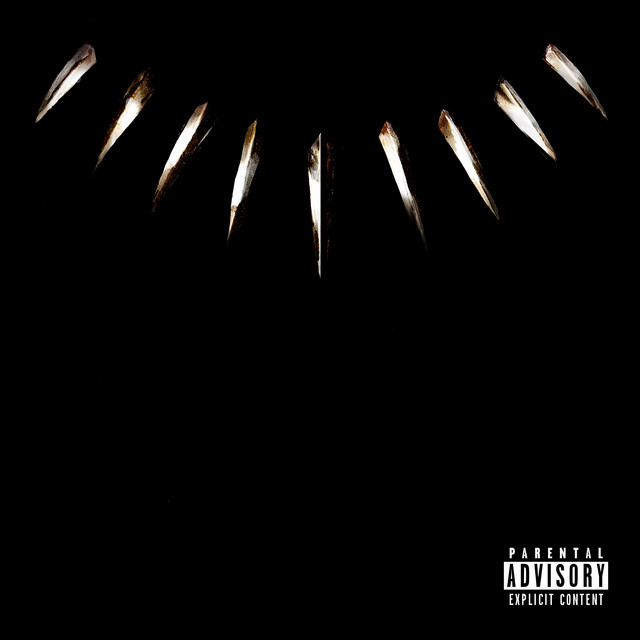
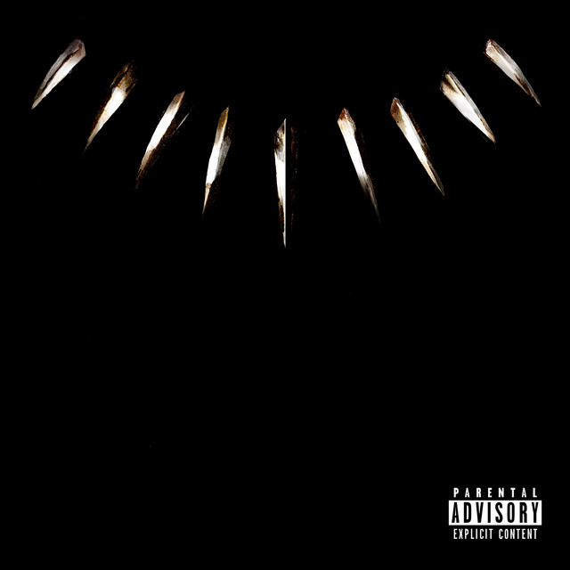

Biografia
Considerado um dos rappers mais influentes de sua geração, Kendrick Lamar é reconhecido pelas melodias cativantes, narrativas confessionais e letras afiadas, que o levaram a atingir o topo das paradas e devorar dezenas de prêmios.
• Kendrick Lamar Duckworth (nascido em Compton, em 1987) começou a carreira com o nome de K. Dot. Aos 16 anos, chamou atenção na Califórnia ao lançar a mixtape Hub City Threat: Minor of the Year e garantiu o primeiro contrato com uma gravadora.
• Entre 2005 e 2010, vieram as mixtapes Training Day; No Sleep ’Til NYC, colaboração com Jay Rock; C4, inspirada no álbum Tha Carter III, de Lil Wayne; e Overly Dedicated, já como Kendrick Lamar.
• Foi só em 2011 que lançou o primeiro álbum de estúdio, Section.80, de forma independente. O trabalho se popularizou com as poderosas “HiiiPoWeR” e “A.D.H.D.” e abriu caminho para good kid, m.A.A.d city (2012), que recebeu cinco indicações ao GRAMMY, incluindo Álbum do Ano.
• To Pimp a Butterfly, de 2015, incorporou elementos de funk, soul e jazz. A faixa “Alright” foi adotada pelo movimento Black Lives Matter, e “i” venceu o GRAMMY de Melhor Música de Rap em 2015. O trabalho entrou para a lista de melhores do ano em várias publicações.
• O primeiro hit número 1 de Lamar foi “HUMBLE.”, do álbum DAMN. (2017). O trabalho teve contribuições de Rihanna e U2, ganhou cinco de sete indicações ao GRAMMY, além do Prêmio Pulitzer de Música de 2018, o primeiro a ser dado para artistas fora do jazz e da música clássica.
• Lamar produziu a trilha sonora do filme Pantera Negra, de 2018, e emplacou “All The Stars”, parceria com SZA, entre as indicações ao Oscar de Melhor Canção Original.
• Entre 2018 e 2022, Lamar não lançou produções próprias, mas continuou na mídia. No período, estreou como ator na 5.ª temporada da série Power. Para isso, pediu sua escalação para 50 Cent, produtor executivo e ator da produção, com a intenção de retratar um personagem diferente de sua personalidade musical e inspirado em conhecidos da própria infância.
• Em 2022, Lamar se apresentou no show do intervalo do Super Bowl junto com ícones como Eminem, Snoop Dogg, Anderson .Paak e Mary J. Blige. Antes do lançamento do 5.º álbum, Mr. Morale & The Big Steppers (2022), com participações de Sampha, Baby Keem e Beth Gibbons, do Portishead, aproveitou uma viagem para Gana para apresentar seu trabalho para executivos da música e artistas do país.
Galeria


 


Influências
Kendrick Lamar afirmou que Tupac Shakur, The Notorious BIG, Jay Z, Nas e Eminem são os seus cinco melhores rappers favoritos. Tupac Shakur é a sua maior influência, e influenciou a sua música, bem como o estilo de vida do dia-a-dia. Em uma entrevista de 2011 com Rolling Stone, Lamar mencionou Mos Def e Snoop Dogg como rappers que ele ouviu e tomou influência durante seus primeiros anos. Ele também cita o rapper DMX como uma influência: "[DMX] realmente [me iniciou] na música", explicou Lamar em entrevista ao Power 99 da Filadélfia. "Esse primeiro álbum [It's Dark and Hell Is Hot ] é clássico, [então ele teve uma influência sobre mim]". Ele também declarou Eazy-E como uma influência em uma postagem por Complexo dizendo: "Eu não estaria aqui hoje se não fosse por Eazy-E".
Entrevista
Em uma entrevista de setembro de 2012, Lamar afirmou que o rapper Eminem "influenciou muito do meu estilo" e já creditou Eminem por sua própria agressividade musical, em registros como " Backseat Freestyle ". Lamar também deu o trabalho de Lil Wayne no crédito dos Hot Boys por influenciar seu estilo e elogiou sua longevidade. Ele disse que também cresceu ouvindo Rakim, Dr. Dre e Tha Dogg Pound. Em janeiro de 2013, quando solicitado a nomear três rappers que desempenharam um papel em seu estilo, Lamar disse: "Provavelmente é mais uma influência da costa oeste. Um pouco de Kurupt, [Tupac], com algum conteúdo de Ice Cube". Em uma entrevista de novembro de 2013 com a GQ, quando perguntou "The Four MC's That Made Kendrick Lamar?", Ele respondeu Tupac Shakur, Dr. Dre, Snoop Dogg e Mobb Deep, ou seja, Prodigy. Lamar professou ter sido influenciado pelo trompetista de jazz Miles Davis e Parliament-Funkadelic durante a gravação de To Pimp a Butterfly.